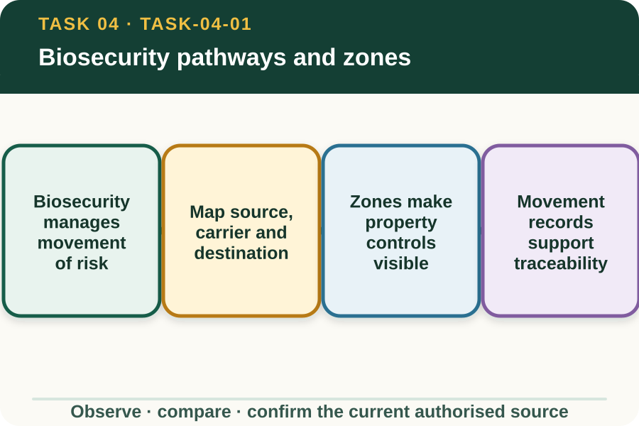
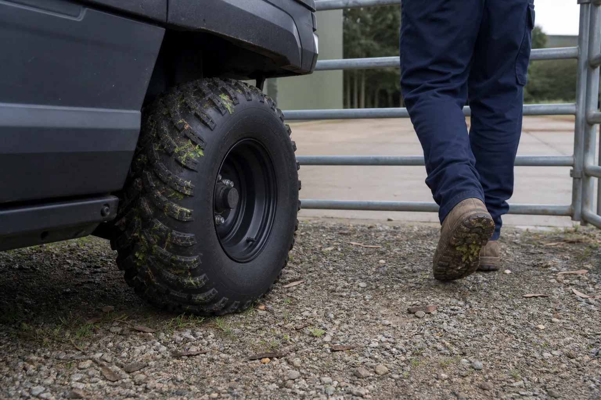

Learning purpose
Trace how soil, plant material, animals, water, vehicles and people can move a biosecurity risk.
Task 4 · Lesson 1 of 4
Trace how soil, plant material, animals, water, vehicles and people can move a biosecurity risk.
Learning purpose
Trace how soil, plant material, animals, water, vehicles and people can move a biosecurity risk.
Success criteria
Learning boundary
Supplementary learning and formative practice only. Current RTO assessment, local procedures and authorised supervision control real work.

Biosecurity protects properties, production systems, animals, plants and environments by reducing the movement and establishment of pests, diseases and unwanted material. A pathway is the way a potential threat can travel from a source to a new place.
Visible dirt is useful evidence but not the whole story. Soil, plant material, water, animal material, tools, vehicles, footwear and people can all form part of a pathway depending on the workplace and current biosecurity information.

A pathway explanation has at least three parts: where material may come from, what may carry it and where it could be transferred. Adding the work activity and contact points makes the map more useful.
This is decision literacy rather than diagnosis. A learner does not need to identify a specific pest or disease to recognise that material moved between controlled areas may require inspection and supervisor direction.
A workplace may use entry points, clean and dirty areas, quarantine areas, designated routes or other zones to manage movement. The meaning, boundary and permissions for each zone come from the current property biosecurity plan.
Do not assume that colour, signage or a layout from another farm has the same meaning. Confirm the local plan, and treat an unclear or breached boundary as information to report.
Traceability helps authorised people understand what entered, left or moved through a property, when and under whose direction. Useful records link the item or activity to locations, dates and any observed concern.
Records should contain relevant facts without exposing unnecessary personal or property information. This site's fictional practice does not replace visitor, vehicle, livestock or equipment records used by a real workplace.
Fictional worked example
Observed evidence: A fictional contractor vehicle arrives from another property with dried plant material visible near an exterior wheel area, and its booked entry zone is unclear. Decision and reason: The vehicle may connect an outside source to a property destination, while the local access decision is unconfirmed. Safe action: The learner does not direct entry or attempt cleaning; they report the observation and booking gap to the supervisor. Result: The supervisor applies the property biosecurity plan and gives an authorised direction. Next check or record: The learner records the factual observation and confirmed status in the nominated system.
A route, tool or vehicle considered for one activity may create a new connection when the destination, previous use, weather or nearby work changes. Rain and mud, for example, can increase material movement without identifying a specific threat.
Review the pathway when the plan changes. The learner's job is to notice the new link and refer it, not to invent an entry, quarantine or clean-down response.
A biosecurity report should be prompt and specific without declaring that contamination or disease has been confirmed. State the observed material, carrier, location, planned movement and information that is missing.
The supervisor or another authorised role decides the biosecurity status and next action using current property and expert sources. A calm evidence-based report protects both safety and decision quality.

External media loads only after you choose it.
Source-linked video
Why watch: Trace multiple contamination carriers through a familiar travel-and-equipment example.
Watch for: Identify three different carriers that could move soil, seeds or disease between places.
Formative practice
Each option explains the consequence. These answers save only on this device.
Written application
Apply and keep a learning record
Use a teacher-provided fictional farm scene. Draw one pathway with source, carrier, contact point and destination, then add where authorised confirmation is required. Do not prescribe entry or cleaning actions.
Learning record: A supplementary-learning pathway map with one factual supervisor referral.
Lesson responses and the activity are formative learning only. Formal sufficiency and competence remain with the current RTO process.
Source basis: AHCBIO203 Release 1 purpose and inspection/reporting requirements. The current property biosecurity plan controls zones, entry, threat status and all response actions.